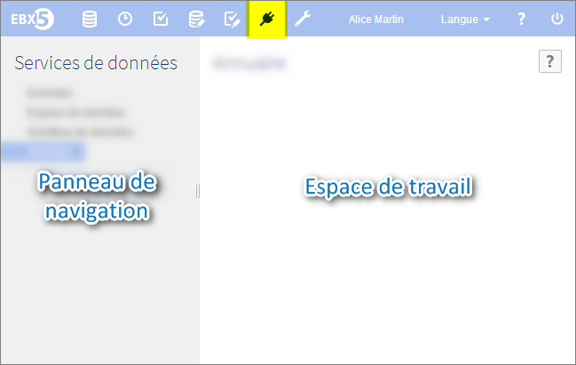

Introduction aux services de données
Les services de données offrent la possibilité d'accéder et d'interagir avec EBX5 pour :
accéder aux données stockées dans les tables (voir données),
interagir avec les espaces de données (voir espace de données),
contrôler les workflows (voir workflow),
définir un lignage vers une logiciel tiers (voir lignage).
Un service de données est un service web standard, qui donne accès à toutes les fonctionnalités et données (créer un espace de données, mettre à jour les enregistrements d'un jeu de données, etc.).
Si vous vous demandez toujours à quoi ces termes techniques se réfèrent, n'hésitez pas à aller à la page glossaire.
Contenu de la section
Vue d'ensemble des services de données
Modalités d'accès dans l'interface

Concepts et outils associés
Services de données standard | Services de données permettant d'accéder à un jeu de données, un espace de données ou un workflow en particulier |
Lignage | Services de données prenant en considération les permissions utilisateur et évitant de possibles erreurs, en cas d'accès à des données non visibles de l'utilisateur actuellement identifié. |
Pour en savoir plus sur la norme WSDL (Web Services Description Language), veuiller consulter le site du World Wide Web Consortium (W3C).
Voir aussi :
 Sommaire du guide utilisateur
Sommaire du guide utilisateur